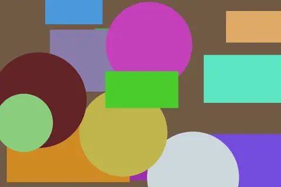
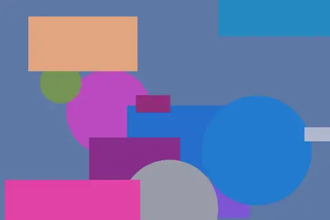
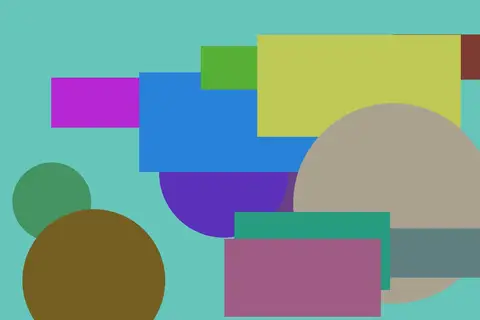

حرف تعيل
1الملخص
- الأنشطة المنفذة
- 5
- المحتوى
- 1
- المنشورات القائمة
- 0
- الصور
- 3
2الأنشطة المنفذة
| التاريخ | النشاط | المكان | النوع |
|---|---|---|---|
| 13 حزيران 2026 | يوم مفتوح 1 | القرية الشمالية | فعالية |
| 21 تموز 2026 | تدريب عملي 2 | السوق القديم | حملة |
| 28 آب 2026 | توزيع المستلزمات 3 | ساحة الحي | أخرى |
| 5 تشرين الأول 2026 | متابعة النتائج 4 | المركز المجتمعي | توزيع |
| 12 تشرين الثاني 2026 | ورشة تعريفية 5 | المدرسة المحلية | تدريب |
3القصص والمنشورات
ندعوكم إلى اليوم المفتوح
ملخص قصير للنص.
4الصور


